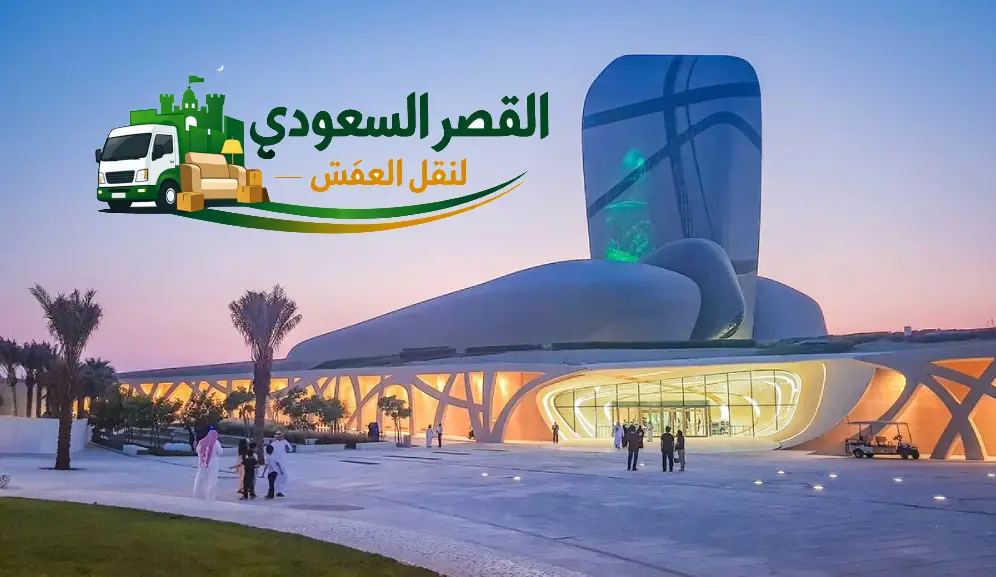

نظرة عامة على مسار نقل عفش من جدة الى الدمام (1,350 كم)
تُعتبر خدمة نقل عفش من جدة الى الدمام من أكبر وأهم التحديات اللوجستية في مجال نقل الأثاث بالمملكة العربية السعودية؛ حيث يمتد هذا المسار عبر شبه الجزيرة العربية من سواحل البحر الأحمر غرباً إلى سواحل الخليج العربي شرقاً بمسافة برية تتراوح بين 1,350 إلى 1,400 كيلومتر. يسلك أسطول الشحن طريق مكة المكرمة - الرياض - الدمام السريع (المسار الوطني 40)، وهو طريق طويل يتطلب شاحنات مجهزة عاليّاً وسائقين محترفين مرخصين للشحن لمسافات طويلة، مع تطبيق معايير حماية استثنائية لعزل المنقولات تماماً عن تقلبات الطقس والحرارة المرتفعة وعواصف الغبار ورطوبة المناطق الساحلية.
نحن في شركة القصر السعودي نوفر رحلات منتظمة ومجدولة أسبوعياً تربط مدينة جدة بحاضرة الدمام وكافة مدن المنطقة الشرقية (الخبر، الظهران، الجبيل، الأحساء، والقطيف). نقدم خدمة متكاملة تبدأ من المعاينة والفك والترقيم بجدة، والتغليف الخماسي المعزول، والتحميل الهندسي، وصولاً إلى التسليم والرفع والتركيب النهائي في منزلك أو مقرك الجديد بالدمام تحت مظلة ضمان رسمي وشامل بنسبة 100%.
بيانات ومواصفات مسار الشحن البري (جدة ⬅️ الدمام)
خريطة المسار البري للشاحنة من جدة إلى الدمام
يتم تزويد العميل برقم السائق المباشر وتتبع حي لحركة الشاحنة طوال رحلة السفر حتى الوصول للدمام.

أسطول شاحنات دينا مقفلة ومجهزة لقطع مسافة 1350 كم بين جدة والدمام بأقصى درجات الأمان
أسعار نقل العفش من جدة الى الدمام لعام 2026
نظراً للمسافة الطويلة التي تبلغ 1350 كم، فإن البحث عن اسعار نقل العفش من جدة الى الدمام يتطلب التوازن بين التكلفة المعقولة ومستوى الأمان والضمان. تقدم شركة القصر السعودي باقات تسعير عادلة ومدروسة تشمل كافة متطلبات النقل دون أي مصاريف إضافية مفاجئة:
| نوع الشحنة / حجم المسكن | الشاحنة المخصصة | الخدمات المشمولة في الباقة | السعر التقديري (ريال) |
|---|---|---|---|
| نقل غرفة مفردة أو طرود وأجهزة كهربائية | شاحنة نقل مشتركة مجمعة | تغليف كرتوني + باركود ترقيم + توصيل للدمام | 900 - 1,400 ر.س |
| شقة صغيرة (غرفتين وصالة ومجلس) | دينا مقفلة خاصة 4.5 متر | فك كامل بجدة + تغليف خماسي + تحميل + تركيب بالدمام | 1,800 - 2,500 ر.س |
| شقة متوسطة إلى كبيرة (3 - 4 غرف ومطبخ) | دينا إيسوزو جامبو 6 متر مقفلة | فك غرف النوم والمطابخ + تغليف شامل + نقل مباشر + تركيب كامل | 2,600 - 3,600 ر.س |
| شقة 5 غرف أو دور سكني مستقل | دينا جامبو كبرى أو شاحنة لوري | طاقم نجارين مضاعف + تغليف فاخر + بوليصة ضمان شاملة 100% | 3,700 - 4,800 ر.س |
| فيلا كاملة / قصر / مقر شركة أو مصنع | تريلا مقفلة 13.6م أو 2 دينا جامبو | خدمة VIP متكاملة: فك وتركيب المكيفات والستائر والترتيب الكامل | 5,000 - 8,500 ر.س |
* ملاحظة: الأسعار تقديرية وتتحدد بناءً على عوامل ميدانية تشمل رقم الطابق، توفر المصعد، كمية الكراتين ومواد التغليف، والحاجة لونش هيدروليكي خارجي. تفضل بزيارة صفحتنا المخصصة لـ أسعار نقل العفش بجدة لمزيد من التفاصيل.
ما هي العوامل التي تحدد تكلفة نقل عفشك من جدة للدمام؟
أسطول سيارات ودينا نقل عفش من جدة الى الدمام
إن قطع مسافة 1350 كم على طريق سريع يخترق الصحراء يتطلب سيارات شحن بحالة ميكانيكية ممتازة وصناديق معزولة بالكامل. أسطولنا مجهز بأحدث المواصفات لضمان سلامة العفش طوال الرحلة:
دينا إيسوزو جامبو
صندوق مقفل عازل (4.5 - 6م)صندوق مغلق مصفح بألواح عازلة للحرارة والرطوبة ومبطن داخلياً بالموكيت السميك والفوم لامتصاص اهتزازات الإسفلت. مزودة بقضبان ربط وأحزمة هيدروليكية لتثبيت القطع الثقيلة ومنع انزلاقها.
دينا جوانب مرتفعة
شراع ثلاثي الطبقات عازلمخصصة للمنقولات ذات الارتفاعات الخاصة والمجالس العربية والحدائق؛ حيث يتم تغطيتها بشراع PVC مشدود ومقاوم للرياح الشديدة والغبار والأمطار المفاجئة على طريق السفر.
تريلات وشاحنات لوري
مقطورات كبرى (13.6 متر)الحل الشامل لنقل مقتنيات الفلل والقصور والشركات دفعة واحدة دون تجزئة. تتسع لجميع غرف النوم، الصالونات، الأجهزة، والأغراض الخارجية مع طاقم تحميل محترف.
يمكنك معرفة المزيد عن أسطول سيارات النقل عبر صفحة دينا نقل عفش بجدة المتاحة بالموقع.
معايير التغليف الخماسي للشحن لمسافة 1350 كم (مقاومة الغبار والرطوبة)
تتعرض الشحنة أثناء الرحلة من جدة إلى الدمام لاختلافات مناخية واضحة؛ من حرارة ورطوبة البحر الأحمر بجدة، إلى جفاف وغبار صحراء نجد والدهناء، وصولاً إلى رطوبة الخليج العربي بالشرقية. هذا التباين يستدعي نظام التغليف الخماسي المقاوم للعوامل الجوية:
1. البلاستيك الفقاعي الهوائي المزدوج
فقاعات هوائية سميكة مخصصة لشاشات التلفاز الذكية، الواجهات الزجاجية، المرايا، والتحف الكريستالية لامتصاص الصدمات والارتجاجات الناتجة عن تفاوت الطريق لمسافة 1350 كم.
2. الكرتون المقوى 5 طبقات (5-Ply Export Grade)
صناديق كرتونية صلبة مخصصة للشحن الدولي، تُستخدم لتعبئة أواني المطبخ الثقيلة، أطقم الصيني، الكتب، والأجهزة الحساسة مع فواصل كرتونية ممتصة للصدمات.
3. زوايا الفوم والكرتون الصلب
تثبيت زوايا صلبة مثلثة على حواف طاولات الطعام، زوايا الرخام، درفات الدواليب، وأسطح المكاتب لمنع تكسر الأطراف أو تهشم القشرة الخارجية أثناء النقل والرفع.
4. رول الاستريتش الحراري العازل
طبقات نايلون مطاطية تحيط بالقطع بعد تغليفها لمنع تسرب ذرات الغبار الصحراوي ورطوبة الشرقية الساحلية، ولحماية الأقمشة والكنب والمفروشات من أي بقع أو اتساخ.
5. كراتين الملابس المعلقة (Wardrobe Boxes)
صناديق مجهزة بقضيب معدني علوي لنقل الملابس الرسمية والفساتين والعبايات مباشرة من الدولاب دون الحاجة لطيها أو كيّها مرة أخرى عند الوصول للدمام.
للاطلاع على تفاصيل مواد التغليف وخصائصها، تفضل بزيارة صفحتنا المتخصصة في تغليف الأثاث بجدة.
الفك الاحترافي بجدة وإعادة التركيب المتقن بالدمام والخبر
يقوم طاقم من النجارين والفنيين المتخصصين بإدارة مرحلة الفك في جدة ثم استكمال التركيب في موقعك بالدمام أو الخبر بنفس الحرفية والمهارة:
غرف النوم والدواليب
فك غرف النوم الإيطالية والمودرن والكلاسيك ودواليب إيكيا، مع وضع أرقام تسلسلية على كل لوح لتركيبه بنفس الدقة والمقاييس بالدمام.
المطابخ والرخام
فك دواليب المطابخ الخشبية والألوميتال، وتأمين أسطح الرخام الطبيعي والصناعي وقص وتعديل الزوايا إن اختلفت أبعاد المطبخ الجديد بالدمام.
المكيفات والشاشات والستائر
فنيون كهربائيون لفك مكيفات الاسبليت وتأمين الفريون، فك الشاشات الجدارية والستائر والنجف وتغليفها وإعادة تثبيتها وتشغيلها بالمسكن الجديد.
نظام الترقيم الذكي والأكياس المرمزة للبراغي
على مسافة 1350 كم، قد يؤدي ضياع مسمار أو مفصل إلى تعطل تجميع دولاب كامل. لذلك نعتمد أكياساً بلاستيكية مقواة ومرقمة لكل قطعة أثاث تُثبت على لوح الخشب الخاص بها، مما يضمن إعادة تجميع كل غرفة في الدمام كما كانت تماماً دون أي تأخير.
مراحل رحلة نقل العفش من جدة الى الدمام خطوة بخطوة
تخضع رحلة الشحن البري بين جدة والدمام لـ 6 مراحل تشغيلية منظمة تضمن أعلى درجات الانضباط والسلامة:
1 المعاينة وتحديد حجم الشاحنة والاتفاق المالي
حصر شامل لكمية الأثاث والأجهزة بجدة (ميدانياً أو بالفيديو)، واختيار الشاحنة المناسبة (دينا 4.5م أو جامبو 6م أو تريلا)، وتوقيع عقد الشحن الرسمي وتحديد ساعة الانطلاق للدمام.
2 الفك والتصنيف والترقيم بأيدي النجارين بجدة
وصول فريق العمل في الموعد المحدد لبدء فك غرف النوم والمطابخ والستائر وترقيم كل لوح بالأرقام التسلسلية، مع عزل الأشياء القابلة للكسر للتعامل معها بحذر فائق.
3 التغليف الخماسي المقاوم للغبار ورطوبة الساحل
تغليف الزجاج والشاشات بالفقاعات الهوائية المزدوجة، وحماية الخشب بالكرتون المقوى 5 طبقات، ولف المفروشات والكنب بالنايلون العازل، ووضع الأواني داخل كراتين محكمة مع ملصقات تحذيرية.
4 التحميل الهندسي والتثبيت بالأحزمة بالدينا
توزيع أوزان العفش باحترافية داخل صندوق الشاحنة المبطن، حيث توضع القطع الثقيلة بالأسفل والأمام، والقطع الحساسة بالأعلى، مع ربط كل صف بأحزمة شد جدارية تمنع أي حركة على الطريق.
5 رحلة السفر السريعة والتتبع المباشر (1,350 كم)
انطلاق الشاحنة عبر طريق مكة - الرياض - الدمام السريع (مسار 40) بقيادة سائقين متمرسين للشحن لمسافات طويلة، مع وقفات تفقدية دورية وتزويد العميل بإحداثيات الوصول لحظة بلحظة.
6 التفريغ والرفع والتركيب النهائي بالدمام
فور الوصول للمسكن الجديد بالدمام، يقوم الفريق بتفريغ الأثاث ورفعه للأدوار المحددة (بالمصعد أو الونش)، وإعادة تجميع غرف النوم والمطابخ والستائر ومطابقة قائمة الجرد وتسليم الضمان.
التغطية الجغرافية الكاملة: أحياء الدمام والخبر والشرقية للتسليم
نغطي 100% من أحياء مدينة جدة للاستلام والتحميل، وتصل شاحناتنا لكافة أحياء حاضرة الدمام ومحافظات المنطقة الشرقية للتسليم والتفريغ:
مناطق وأحياء الاستلام في جدة:
- شمال جدة: الشاطئ، أبحر الشمالية، أبحر الجنوبية، البساتين، المحمدية، النعيم، المرجان، الخالدية، الروضة، الزهراء، السلامة.
- وسط وشرق جدة: المروة، الصفا، السامر، الربوة، الفهد، التوفيق، السليمانية، الفيصلية، النسيم، بني مالك، الأجواد.
- جنوب جدة والمحافظات: البلد، العمارية، الكندرة، الثغر، الجامعة، الحمدانية، ثول، عسفان، بحرة، ذهبان.
مناطق وأحياء التسليم بالدمام والشرقية:
- حاضرة الدمام: الشاطئ الشرقي والغربي، المزروعية، الدانة، الفاخرية، طيبة، الندى، الفردوس، الفيصلية، الجوهرة، الخالدية، الحمراء، ضاحية الملك فهد، المنار، العزيزية، النورس.
- الخبر والظهران: اليرموك، العليا، الحزام الذهبي، الحزام الأخضر، الكورنيش، التحلية، الدوحة الشمالية والجنوبية، حي الجامعة، القصور، الراكة.
- المحافظات المجاورة: الجبيل والجبيل الصناعية، الأحساء (الهفوف والمبرز)، القطيف، سيهات، بقيق، ورأس تنورة.
نقل الشقق والفلل والشركات والمشاريع من جدة الى الدمام
خدمات تشغيلية مصممة خصيصاً لتناسب متطلبات الانتقال السكني والتجاري والصناعي بين الغربية والشرقية:
نقل أثاث الشقق السكنية
خدمة سريعة وشاملة للعائلات والموظفين المنتقلين للمنطقة الشرقية، تشمل فك وتغليف غرف النوم والمجالس والمطبخ ونقلها في دينا مقفلة مع التركيب الفوري بالدمام.
نقل الفلل والقصور
خدمة VIP مخصصة للكميات الضخمة من الأثاث الفاخر، النجف الكريستالي، الرخام، التحف، والحدائق الخارجية، مع توفير تريلات مغلقة وطاقم نجارة وتغليف متعدد التخصصات.
نقل الشركات والمشاريع
نقل مكاتب المقرات التجارية، قاعات التدريب، الأجهزة الإلكترونية، والخوادم (Servers) مع تأمين الأرشيف والملفات السرية لضمان استمرار الأعمال في الشرقية دون انقطاع.
خدمة الونش الهيدروليكي لتنزيل ورفع العفش بجدة والدمام
لتفادي أي خدوش للحوائط أو تلف للأثاث في المباني والأبراج السكنية المرتفعة، نوفر أوناش رفع هيدروليكية متطورة تصل حتى الدور الـ 16 في كل من جدة والدمام:
متى تحتاج لطلب الونش الهيدروليكي؟
- الأدوار العليا (من الدور الثالث وما فوق) عند عدم توفر مصعد خدمات واسع.
- القطع الكبيرة التي يصعب مناورتها في السلالم الضيقة (كنب متصل، طاولات سفرة رخامية، ثلاجات كبرى).
- توفير أكثر من 60% من وقت وجهد التنزيل والرفع مع حماية مداخل العقار تماماً.
الضمان الشامل 100% والعقد الرسمي وبوليصة الشحن (E-E-A-T)
على مسافة 1350 كم، المصداقية هي رأس مالنا. نلتزم تجاه عملائنا بأعلى معايير الشفافية والمسؤولية القانونية:
عقد شحن بري معتمد
يوثق مواعيد الاستلام بجدة والتسليم بالدمام والتكلفة المتفق عليها بدقة دون أي رسوم خفية.
بوليصة شحن وقائمة جرد
بيان تفصيلي بجميع أعداد القطع والكراتين يتم توقيعه عند التحميل ومطابقته عند الاستلام بالشرقية.
ضمان تعويض شامل 100%
تحمل كامل للمسؤولية والتعويض الفوري والمباشر عن أي خدش أو كسر أو تلف لا قدر الله.
خدمة التخزين المؤقت قبل التسليم في الدمام
إذا كنت مضطراً لمغادرة مسكنك بجدة بينما لا يزال عقارك بالدمام أو الخبر قيد التشطيب أو استلام المفاتيح، توفر شركة القصر السعودي مستودعات تخزين آمنة:
- مستودعات مخصصة ومكيفة ومؤمنة بكاميرات مراقبة على مدار 24 ساعة لحماية الأثاث من الرطوبة والحرارة.
- مرونة كاملة في فترات الحفظ (أسبوعية، شهرية، أو سنوية) بحسب رغبتك.
- إعادة التوصيل والتركيب فور إشعارنا بجاهزية منزلك بالدمام.
قائمة الإرشادات الذهبية للعميل قبل السفر والانتقال من جدة للدمام
نظراً لأن الرحلة تستغرق مسافة طويلة، يُنصح باتباع هذه الخطوات قبل موعد التحميل بـ 48 ساعة:
1. الأوراق الرسمية والمقتنيات الثمينة
احرص على نقل الذهب، المبالغ النقدية، جوازات السفر، بطاقات العائلة، واللابتوب الشخصي في حقيبتك الخاصة معك مباشرة في سيارتك أو رحلة الطيران.
2. تفريغ وتنظيف الفريزر والثلاجة
افصل الثلاجة وتخلص من الأطعمة الرطبة قبل موعد التحميل بـ 24 ساعة، ونظفها وجففها تماماً لتفادي الروائح العفنة أثناء السفر لمسافة 1350 كم.
3. جاهزية مسكن الوصول بالدمام
تأكد من فتح المياه والكهرباء بالمنزل الجديد بالدمام، ونظافة الأرضيات، والتنسيق المسبق لتأمين موقف للدينا أمام العمارة وحجز المصعد.
4. توثيق الأجهزة قبل الفك
التقط صوراً سريعة للأجهزة الكهربائية والشاشات وأطقم الكنب قبل بدء الفك بجدة للمطابقة والتأكد من سلامتها التامة عند الاستلام بالدمام.
أسئلة شائعة عن نقل عفش من جدة الى الدمام
إليك الإجابات الكاملة عن أبرز الاستفسارات الأكثر بحثاً التي تردنا من عملائنا بخصوص نقل الأثاث بين جدة والدمام والمنطقة الشرقية:
تستغرق رحلة الطريق للشاحنة ما بين 14 إلى 16 ساعة قيادة حذرة على مسافة 1,350 كم عبر طريق مكة - الرياض - الدمام السريع (المسار 40). وتتم عملية النقل كاملة من الباب للباب (تحميل بجدة وتوصيل وتركيب بالدمام) خلال 24 إلى 48 ساعة للنقل الخاص، ومن 48 إلى 72 ساعة للنقل المشترك.
تبدأ أسعار شحن الغرف الفردية والطرود من 900 ريال، بينما تتراوح تكلفة نقل شقة صغيرة (2-3 غرف) مع الفك والتغليف بين 1800 إلى 2500 ريال، والشقق الكبيرة (4-5 غرف) بين 2600 إلى 3600 ريال، أما الفلل الكاملة والقصور فتبدأ من 5000 ريال بحسب حجم الشاحنة والخدمات المرافقة.
نستخدم أسطول دينا إيسوزو جامبو بصندوق مغلق مصفح ومعزول حرارياً ومبطن بالموكيت لامتصاص الصدمات، ونطبق نظام التغليف الخماسي (فقاعات مزدوجة + كرتون 5 طبقات + زوايا فوم صلبة + استريتش حراري مانع للغبار والرطوبة).
نعم، تتضمن الخدمة طاقماً من النجارين والفنيين المحترفين لفك غرف النوم والدواليب والمطابخ والستائر والمكيفات بجدة، وإعادة تجميعها وضبطها بالكامل في منزلك الجديد بالدمام أو الخبر أو الظهران بميزان ماء واختبار جاهزيتها التامة.
نعم، نلتزم بتوقيع عقد رسمي وبوليصة شحن مسجلة توضح أعداد ومواصفات المنقولات، مع ضمان شامل 100% ضد الخدش والكسر والضياع والتزام بالتعويض الفوري والمباشر عن أي ضرر يحدث أثناء السفر.
النقل الخاص يخصص دينا مقفلة بالكامل لعفش منزلك فقط لتنطلق مباشرة وتصل خلال 24 ساعة، وهو الأمثل للشقق والفلل. أما النقل المشترك فيجمع طرود وغرف صغيرة لعدة عملاء بتكلفة اقتصادية موفرة مع وصول خلال 48 إلى 72 ساعة.
تسلك الشاحنة طريق مكة - الرياض - الدمام السريع (المسار 40) عابرة: جدة ⬅️ الطائف ⬅️ رضوان ⬅️ الخاصرة ⬅️ القويعية ⬅️ الرياض (الدائري الجنوبي) ⬅️ سعد ⬅️ بقيق ⬅️ مدخل الدمام الغربي، مع وقفات تفقدية دورية لسلامة التربيط.
بالتأكيد، تمتد خدماتنا لتشمل التوصيل والتفريغ والتركيب في كافة مدن المنطقة الشرقية (الدمام، الخبر، الظهران، الجبيل، الأحساء، القطيف، وسيهات) بنفس معايير الجودة والضمان.
نعم، نوفر أوناش رفع هيدروليكية متطورة لتنزيل ورفع العفش الثقيل والقطع الكبيرة حتى الدور الـ 16 لحماية واجهات العقار والسلالم الضيقة بجدة أو الدمام.
يقوم فنيو الكهرباء والتكييف بفك المكيفات وتأمين الفريون، وتثبيت حلة الغسالة لمنع تضرر المحرك، وتفريغ الثلاجة وتغليفها ونقلها رأسياً وتثبيتها بأحزمة أمان خاصة.
نعم، نوفر مستودعات تخزين مؤمنة ومكيفة ومعزولة في جدة والدمام للعملاء الذين لم تكتمل أعمال الصيانة في منازلهم الجديدة بالمنطقة الشرقية، لفترات تبدأ من أسبوع وحتى عدة أشهر.
يمكنك الحجز بسهولة عبر الاتصال بالرقم 0540026747 أو التواصل عبر الواتساب، وننصح بالحجز المسبق قبل موعد النقل بـ 48 ساعة لتنسيق فريق النجارة والتغليف واختيار التوقيت الأنسب لانطلاق الدينا.
احجز رحلة نقل عفشك من جدة الى الدمام الآن
اتصل بنا اليوم للحصول على عرض سعر فوري مخصص لحجم مقتنياتك مع ضمان السلامة التامة والتوصيل في الموعد المحدد.